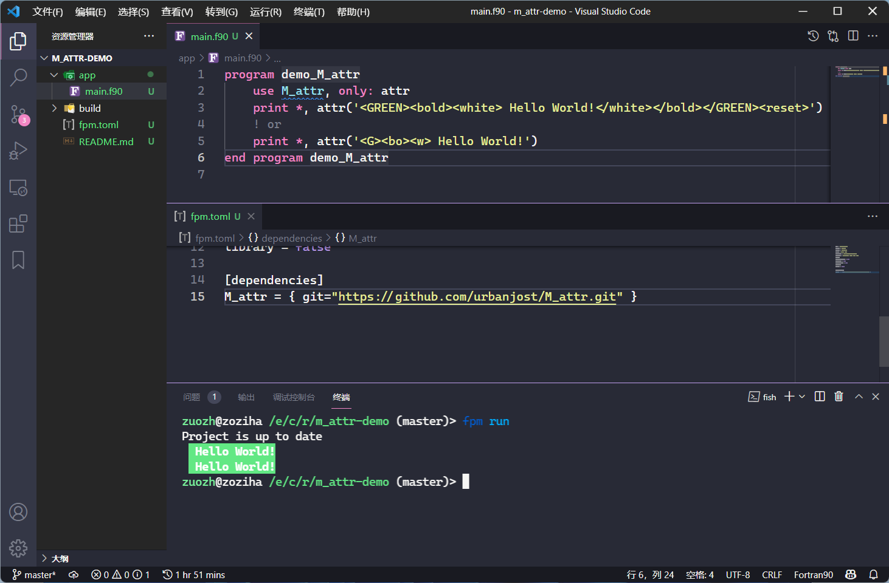

fortty 和 M_attr
本节介绍两个 ESC 码终端样式库。
有些控制台是不支持的 ESC 码的，GFortran 和 Intel OneAPI 为我们提供了拓展函数 isatty，
利用 isatty 来判断控制台是否为 TTY 终端，从而选择为字符添加 ESC 码。
使用M_attr输出彩色控制台文本
M_attr仓库（许可证：MIT）：https://github.com/urbanjost/M_attr
M_attr是urbanjost的开源项目，使用ANSI码escape序列来输出终端彩色文本属性。
简介
M_attr之所以被推荐，是因为它足够简单，巧妙使用类似HTML的标记化风格来控制输出文本的属性。
它的应用场景主要是：
- 屏幕日志输出；
- 屏幕UI效果增强；
- 炫技。
另外，urbanjost是一个资深的Fortran开源开发者。
使用M_attr输出彩色控制台文本
M_attr库可以在 GBK 编码的 CMD 或 UTF8 编码的 Bash 上正确运行。
attr函数
M_attr库的精髓即attr函数，我们建立一个简单的示例来演示它：
cd workspace # 切换到你常用的工作区间
fpm new --app m-attr-demo # 创建fpm项目
cd m-attr-demo && code . # 切换到`m_attr-demo`文件夹，并使用vs code打开它
我们创建了一个m_attr-demo工程，使用vs code打开了它，我们可以在fpm工程的fpm.toml文件中添加以下语句，以使用M_attr：
[dependencies]
M_attr = { git="https://github.com/urbanjost/M_attr.git" }

我们可以使用属性的全称和缩写来标记目标文本，大写属性表示背景色，小写属性表示前景色。
示例代码
!> author: 左志华
!> date: 2022-08-12
module m_attr_demo
use, intrinsic :: iso_fortran_env, only: output_unit
use m_attr, only: attr
implicit none
private
public :: error
contains
!> Get string with error style <br>
!> 获取带错误样式的字符串
function error(msg) result(ans)
character(*), intent(in) :: msg !! error message <br>
!! 错误信息
character(:), allocatable :: ans
if (is_a_tty(output_unit)) then
ans = attr("<r>"//msg//"</r>")
else
ans = msg
end if
end function error
!> Is a tty <br>
!> 是否是 tty
logical function is_a_tty(unit) result(atty)
#if defined __INTEL_COMPILER
use ifport, only: isatty
#endif
integer, intent(in) :: unit !! Unit to check <br>
!! 待检查的单元
atty = .false.
#if defined __GFORTRAN__ || defined __INTEL_COMPILER
atty = isatty(unit)
#endif
end function is_a_tty
end module m_attr_demo
program main
use m_attr_demo, only: error
implicit none
print *, error("Hello, World!")
print *, "Hello, World!"
end program main
说明
attr函数是核心函数，除此之外，还有一些辅助函数，可以对内部实现效果进行自定义调整，建议深度使用者细读源代码和帮助文档。
fortty
fortty 仓库（许可证：Apache 2.0）：https://github.com/awvwgk/fortty
fortty 是 Sebastian Ehlert 的开源项目，原本是为 Fortran-stdlib 设计的，现单独做了一个库。
示例代码
!> author: 左志华
!> date: 2022-08-12
module m_attr_demo
use fortty_escape, only: red, reset, operator(//)
use fortty_util, only: is_stdout_a_tty
implicit none
private
public :: error
contains
!> Get string with error style <br>
!> 获取带错误样式的字符串
function error(msg) result(ans)
character(*), intent(in) :: msg !! error message <br>
!! 错误信息
character(:), allocatable :: ans
if (is_stdout_a_tty()) then
ans = red//msg//reset
else
ans = msg
end if
end function error
end module m_attr_demo
program main
use fortty_util, only: is_stdout_a_tty
use m_attr_demo, only: error
implicit none
print *, error("Hello, World!")
print *, "Hello, World!"
end program main
fortty 提供了 is_stdout_a_tty 和 is_stdin_a_tty 包装了 isatty 函数，用于判断控制台是否为 TTY 终端。
小结
如果我们需要完整的 ANSI escape 序列，可以使用 M_attr 或 fortty 库，否则，我们可以仅使用部分 ESC 码和 isatty
函数即可包装为我们自定义需求的代码。